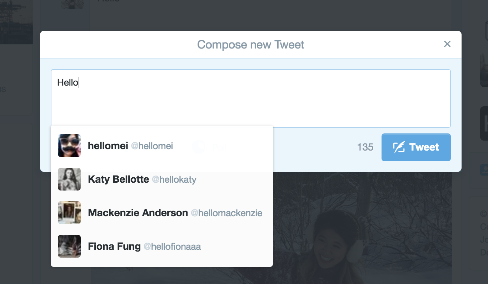

Blog.
Read about my thoughts here.
January 19, 2016
Twitter requires you to fill out a "form" in order to post a tweet. You type in whatever you want to say and it get's published onto your page. The unique part about it is that it can understand what you're typing and use that to help easily tag people or input hashtags. It shows you how many cahracters you have written because there is a character limit on the tweets that you post. The "Tweet" button that allows you to submit the form is very bold and easy to notice because that is the main priority of the form. It's a very simple form because there is only one thing you need to fill out but it is very clear and easy to use.

First Blog Entry - January 7, 2016
One of the unique features of the site is with its interaction design that can be shown in the section that shows the different features of the app. When you hover over the image, the dark square slides up to reveal the image for you to also click. This unique component makes the website fun to interact with.

I think this website is very effective in communicating the information of its services to customers. When I was studying abroad, I was looking for different methods of transportation from the airport in London to my hotel and Uber's website clearly listed the different rates and various options for cars, making it easy for me to plan out my trip and find the information I was looking for.